|
home
> Photography and Video |
|
|
Photography and Video (page under construction - still you may find it very useful)
DSLR vs Point-and-Shoot (Canon Rebel 350 vs Canon PowerShot G3).
Both pictures made within 1 min from each other, same distance, same light.
Well, it was done with built-in flash on each camera.
The difference is really big, as you can see.
Why?
It is not just optics and megapixels.
It is also different noise levels and dynamic ranges of the sensors, different processor power, etc.
Not to mention red eye problem on a cheaper camera is completely non-existent on an DSLR.
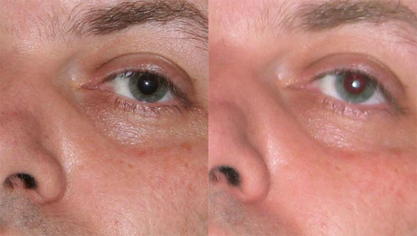
Also a lot depends on thegenius of the photographer - http://club.foto.ru/gallery/photos/author.php?author_id=17648
and on post-processing - http://www.luminous-landscape.com/columns/eye-camera.shtml
Some links for photo-gear reviews:
Equipment I use for Photo and Video at home (2008): (MS Word File with Pictires)
- 1 of Canon FS-100 Flash Memory Camcorder (Silver) Price - $285 (has input for external microphone, records on SD - mpeg2)
- 1 of Transcend SDHC card 8 GB. Price - $17
- 1 of Manfrotto 725B Digi Tripod with Integrated Ball Head with Dove Tail Plate and Carrying Bag (Black) -
Price - $115
- 2 of Impact Umbrella - White Translucent (43") Mfr# S3243 B&H# IMU43T - Price:$ 14.95
- 2 of Impact Light Stand - Black, 6' 1/4"-20 Threaded Top Mfr# 2205 B&H# IMLS6BQ - Price:$ 19.95
- 1 of Audio-Technica AT803B - Omni-Directional Lavalier Condenser Microphone - Price: $142
- 1 of Hosa Technology MIT-156 Low to High Impedance Matching Transformer with XLR Female to Stereo 1/8" Miniplug Male Connector Mfr# MIT-156 B&H# HOMIT156 - Price:$ 19.95
- 1 of Audio-Technica 3-pin XLR Male to 3-pin XLR Female Balanced Cable - 15 ft Mfr# AT8314-15 B&H# AUAT831415 - Price:$ 16.99
- 2 of Lowel Tota-Light Tungsten Flood Light (120-240VAC) CompactGull-Wing Pivoting Reflector360° Stay-Cool Tilt-KnobProtective Wire Mesh Screen. Mfr# T1-10 B&H# LOTL. Price:$ 113.95
- 2 of General Brand EMD Lamp - 750 Watts/120 Volts B&H# GBEMD. Price:$ 17.95
- Adobe Premiere Elements - $70 on amazon (or for Mac - ScreenFlow - $99 (http://www.telestream.net/screen-flow/overview.htm)
===================================
Total - $1000 + tax + shipping
|
| Term |
Description |
| Focal Length |
Focal length (FL) of the lens is the distance between optical center of the lens and focal point (imagine you use lens to concentrate sun light to start fire). The longer FL - the smaller the view angle (like telescope), the shorter - the wide the angle. To get view angle similar to normal human eye, the FL should be ~50mm (for old-fashioned film). If you making a group picture in a room - you need wider angle (28 mm lens). If you making a portrait - you need to narrow field (110 - 135 mm lens). A lens with variable zoom (lens) covering 28-135 mm will probably cover 99% of your every-day needs (work-horse lens).
http://www.prime-junta.net/pont/Photography_lessons/j_Lesson_9/a_The_Faithful_50.html - good article about 50mm |
| Crop Factor |
CF is the ratio of the size of standard frame of the 35mm film (24x36mm) to the size of the detector in your digital camera. If CF=4, this means that to get the same view angle (wide or tele) you need focus lengths 4 smaller than for standard frame (12mm instead of 50mm). This means that the lens may be made much smaller, lighter (and cheaper). Digital SLRs (DSLRs) typically have crop-factor of ~1.6. So DSLR zoom lens with FL changing from 17mm to 85mm (17x85) corresponds approximately to (27x136) for old-fashioned SLR lens |
| Aperture |
Size of the lens opening expressed as a ratio of Focal Length (FL) to opening diameter. For example 4 (or f/4 or F4 or 1:4) means that Diameter is 1/4 of Focal Length. Aperture sizes selected so that each next size is sqrt(2) times smaller - thus delivering 2-times less light: 1.4, 2, 2.8, 4, 5,6, 8, 11, 22, 32, etc. The larger the number - the smaller the opening. For zoom lenses (lens where you can change FL) the aperture on tele-side will be different (smaller) than on the wide side. |
| Fast lens |
Lens speed means the maximum aperture. Usually 2 or 1.4 = fast lens (for tele-lens 2.8 is considered to be 'fast' |
| Depth of Focus |
There are 3 factors influencing the DOF:
- Focal length.
When using tele-lenses to make a protret, you may get background blurred. On the other side lenses with shorter focal length (small pocket cameras) have larger DOF.
- Apperture. With bigger lens opening you get rays going at bigger angles - thus out-of-focus points will produce larger "circles-of-confusion" on the focal plane.
- Distance to the subject. When the subjects are far away - they all seems to be in focus because all their images will all be at the focal plane.
Here are couple of diagrams from http://www.cambridgeincolour.com/tutorials/depth-of-field.htm
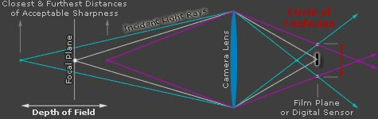 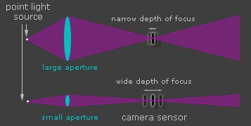 |
| Shutter speed |
duration of the shot: 100 means 1/100 of a sec. Longer shutter speeds expressed in seconds. |
| Sensitivity |
Old-fashioned film had typical sensitivity of 100 or 200. 400 was very sensitive. To increase exposure you can increase the sensitivity, or increase amount of light in the same proportion (increase apperture opening, or decrease shutter speed). Thus sensitivity number is proportional to the amount of light you need to get the same result. Note, though, that more sensitive film (or higher sensitivity settings on your digital camera) will produce much worse image (granular) Modern sensors have effective sensitivity up to 1600, 3200, and more (much better than film ever had). So you can make descent pictures in situations when in old times you would need a flash lamp. |
| Red Eye |
If flash is very close to the lens, and subject looks at the camera, and it is dark (pupils are open) - then light from flash gets reflected from the red (filled with blood) retina of the eye causing pupils to be red on the photograph. How to get rid of this?
- don't use flash - just increase teh light around if you can, use faster lens (with bigger opening), use more sensitive film or sensor, reduce shutter speed.
- ask subject to look away from the camera
- point flash into other direction so that only diffused flash light enters the eye.
- use external flash which is far away from the lense.
- use pre-flashes (red-eye reduction mode in your camera) causing iris to contract. Or cause contraction by turning on more light in the room.
- use software to edit-out red eye spots.
|
| SLR, DSLR |
SLR - Single-lens reflex camera - has a moving mirror system to allow the photographer to see exactly what goes to the film (as opposed to have a separate viewfinder). SLR camera usually has interchangable lenses.
DSLR - Digital camera which has the same lens mounts as SLRs. Thus DSLR can use old SLR lenses. There are also DSLR lenses which are lighter because they are designed to work with smaller sensor size (eveerything is smaller - apperture opening, focal length, weight, etc.).
Note:Lens mounts are NOT standard - differ between manufactures. But you can use adapters. |
| lense |
CANON lenses:
- EF lens - Canon standard lens mount, EF = Electro-Focus (built inside the lens).
- EF-S - similar to EF lens mount, used in Canon DSLRs. Camera body with EF-S mount can accept both EF and EF-S lenses. EF-S lenses should NOT be used on full frame cameras with EF mount, because EF-S lenses are designed for smaller sensor and because the bigger mirror in the body may mechanicaly hit the lens (see more here: http://photonotes.org/articles/beginner-faq/lenses.html ).
- USM - Ultrasonic motor drive for auto-focus. Fast and silent.
- IS - Image stabilizer (optical).
- L - series lenses (Luxyry ?) - top of the line Canon EF lenses (professional, expensive, may be heavy if they are fast). Usually white-ish color with a red ring.
NIKON lenses:
- Nikon F-mount - standard Nikon SLR lens mount
- AF - auto focus, motor inside body (not a lens).
- AF-I - Auto focus-Internal
- AF-S - Auto focus-Silent - similar to Canon's USM.
- ED - “Extra-low Dispersion” glass
- DX - Lens designed for sensors smaller than 24x36.
- VR - Vibration Reduction (similar to Canon's IS - Image Stabilization)
- PC - Perspective Control - lens includes movements to control perspective and depth-of-field.
More - see here:
|
| Megapixels |
Today (2010) megapixels:
- 3 - cellphone
- 10 - pocket camera
- 15-18 - DSLR
- 20+ - professional DSLR
- 60 - Hasselblad camera - 36x48mm sensor from Kodak
- 160 - Seitz 6x17 Digital (scan-back - takes 1 sec for the sensor to move accross the frame)
- 1 Gigapixels - custom cameras for telescopes
|
| Sensor size |
| Photo |
Video |
old name |
old name diameter
in mm |
Actual
Diagonal
in mm |
actual size
in mm |
| Medium format sensor used on Phase One P65 Plus |
|
|
|
67.36 |
53.9 x 40.4 |
| Medium format Kodak KAF 3900 sensor |
|
~3" |
|
63.96 |
50.7 x 39 |
| Full Frame |
|
35mm |
|
43.27 |
36 x 24 |
| APS-H (Canon) |
|
|
|
34.42 |
28.7 x 19 |
| Nikon D90, D5000 |
|
|
|
28.84 |
24 x 16 |
| APS-C (Nikon DX, Pentax, Sony Nex5, Samsung NX100) |
Sony NEX-VG10E |
~2" |
|
28.35 |
23.6 x 15.7 |
| Canon DSLRs (7D, 60D, 550D) |
|
|
|
26.68 |
22.2 x 14.8 |
| Foreon (Sigma) |
|
|
|
24.88 |
20.7 x 13.8 |
| Four Thirds System (Olympus, Panasonic) |
|
4/3" |
33.87 |
21.64 |
17.3 x 13 |
| |
Professional video cameras
Canon XL H1A, Canon XH A1S,
Sony HDR-FX1000,
Panasonic AG-HMC40,
JVC GY-HM100
|
1" |
25.4 |
16 |
12.8 x 9.6 |
| |
|
2/3" |
16.93 |
11 |
8.8 x 6.6 |
| Canon S95 |
|
1/1.7" |
14.94 |
9.5 |
7.6 x 5.7 |
| |
|
1/1.8" |
14.11 |
8.94 |
7.2 x 5.3 |
| |
|
1/2" |
12.7 |
8 |
6.4 x 4.8 |
small cameras - Sony Cyber-shot,
Canons, Panasonic, etc.
|
JVC GZ-HM1 |
1/2.3" |
11.04 |
7.7 |
6.16 x 4.62 |
| |
|
1/2.5" |
10.16 |
7.18 |
5.76 x 4.29 |
| |
Canon HF S21 |
1/2.6 |
|
|
|
| |
|
1/2.7" |
9.41 |
6.64 |
5.3 x 4.0 |
| |
Sony HDR-CX550V |
1/2.88 |
8.82 |
|
|
| |
Sony HDR-FX1, HVR-Z1U |
1/3" |
8.47 |
6 |
4.8 x 3.6 |
| |
|
1/3.2" |
7.94 |
5.64 |
4.5 x 3.4 |
| |
|
1/3.6" |
7.06 |
5 |
4.0 x 3.0 |
| |
Panasonic HDC-TM700, Sony HVR-V1U, Flip cameras |
1/4.1 |
6.2 |
|
|
| |
Panasonic SDR-S150, Canon FS-100 |
1/6" |
4.23 |
|
|
|

See good descriptions here,
also here.
Note - the "old names" are NOT the diagonal size. The "35 mm" name comes from the width of the photo film. Other "rational" names come from outer diameters of video tubes in old TV cameras in 1950-60s. The corresponding sensor size (diagonal) is ~2/3 of the diameter of the tube (read here - dpreview.com ).
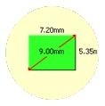 |
|
Pixel Density
MPixel/cm2 |
High pixel density of pocket cameras (24..50 MPixel/cm2) means small pixels, which means low SNR (Signal-to-Noise ratio), small dynamic range, images look "flat", without fine details of dark or light shades.
More expensive cameras have ~10 times lower pixel density (1..5 MPixel/cm2). This is achieved by using much bigger sensor.
http://en.wikipedia.org/wiki/Image_sensor |
CMOS vs
CCD sensors |
- CCD (Charge-Coupled Device). Charges captured in pixels - and then passed outside in a bucket-brigade manner. Originally CCD were designed for video cameras and had interlaced design - odd rows, even rows, masked (light insensitive) intermediate rows. The odd and even rows alternate in shifting their charges to the masked row. No shutter is needed. In still photography sensor design is progressive. No intermediate rows. After light exposure, the charges are shifted out - either to the side in a bucket-brigade manner, or (in some expensive designs) dumped to a secondary image from which they are shifted out. The shifting procedure should be done in the dark - thus mechanical shutter is required.
- CMOS (Complementary Metal–Oxide–Semiconductor). Each pixel column can be instantaneously "reset", and then after "exposure time" it can be instantaneously "read-out". The read-out process is done by ADC (Analog to Digital Converter). If you have 10 Mpixels and just 1 converter 50 ns, then 1e7*5e-8 = 0.5sec. Thus you need many converters working in parallel (or make them faster). To achieve short exposure time you still need mechanical shutter.
|
| Rangefinder |
Camera which has a "rangefinder" mechanism - works by showing 2 shifted images in the viewfinder. When you rotate the focus - these images eventually become one (fuse).
Rangefinder cameras' body look clearly different from that of SLR cameras. |
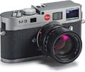 |
|
Here is a link to Canon EF 85mm f/1.2L II USM Autofocus Lens. It is very fast (apperture 1.2). L-class. 85 mm - good for portraits. ~$2,000.
http://www.bhphotovideo.com/c/product/423691-USA/Canon_1056B002AA_EF_85mm_f_1_2L_II.html
Here is a link to a lens with diffractive optics (I do NOT recommend it - just interesting technology):
Canon EF 70-300mm f/4.5-5.6 DO IS USM Lens
- Sony NEX-5, or Micro Four Thirds cameras, for example, Olympus PEN E-PL1, or Panasonic Lumix DMC-G10 - see below.
- Affordable SLR solution:
Body - Some recent Canon EOS, for example Canon EOS 550D (EOS Rebel T2i).
Lense: Canon EF-S 17-85mm f/4-5.6 Image Stabilized USM SLR Lens for EOS Digital SLR's
- Canon SD870IS (2007) - great pocket camera.
Somehow delivers very good images.
8MP. Wide-angle for group (indoor) pictures,
enough zoom for portraits.
- Canon S95 & S95 (2009-2010). PowerShot S95 is an successor/upgrade of S90 (Canon added HD video, made many small improvements). Canon PowerShot S90 is very good 10 MP everyday digital camera. Has manual controls, and make great pictures, also makes videos.
(Also get external slave flash - Vivitar SF4000 or http://zeikos.com, or other wireless slave flashes, even expensive Canon HF-DC1).
- Good small Camera - Sony Cyber-shot DSC-HX5V (2010) - 10-zoom, 10 MPixel, good low-lite sensitivity, optical stabilisation, 1080p HD video, GPS, compass. A bit slow operation.
- Good small Cameras - Sony Cybershot DSC-T series, for example DSC-TX5 or TX9. Very small, internal periscope (4-zoom), good low-light, HD video, great reviews. New models work with SD card, have HD video.
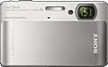
Many-many years ago when all cameras were using film, there were 2 types of photo cameras:
- with 2 lenses: the main lens, and a small separate lens serving as a viewfinder
- with a single lens. The image was reflected to the viewfinder using a mirror (thus the name SLR - Single Lense and Reflex)
When digital cameras started to win the market, they were also following these 2 classes. And DSLR cameras today still have a mirror. Part of the reasoning was to smoothen the transition by providing familiar look and feel, and also by allowing to use old lenses with new digital cameras.
Today when digital cameras have completely monopolized the market, the manufatures decided (finally) to make the next logical step - start making high-end cameras with high-quality sensors and optics (same as on DSLRs), but at the same time without the mirror and the prizm. These cameras are smaller and lighter than DSLR. They have live image on the back screen, and some models have electronic viewfinder. The lenses are interchangeable. They are lighter than those of DSLR, the prices are about the same. All are good cameras. Have selection of lenses, including superzooms. Have big sensors and low pixel density - which means softer backgrounds, more attractive portraits, better shots in the dark.
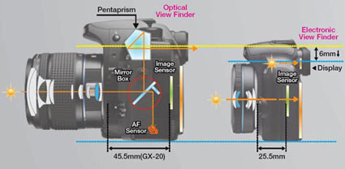
| 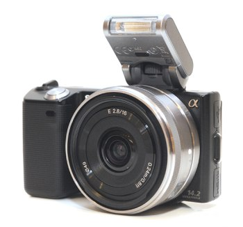 |
|
Sony's design of mirrorless camera - Sony Nex 3 and Sony Nex5. These cameras use E-mount lenses - same lenses which can work with Sony video camcorders. This is former Minolta business - very good cameras). Smaller than Olympus. Pixel Density better - 3.9 MP/cm2, as the sensor is bigger (1.5 crop, instead of 2.0 crop in 4/3). 111 x 59 x 38 mm - 287g (with battery and card, without lens, without flash). - $650 with small lens and without flash, $850 with 2 lenses and flash (Sony HVL-F7S). This camera has VERY good sensor, accoring to review by http://www.dxomark.com/ .
Lenses (E-Mount lenses):
- SEL16F28 - 16mm F2.8 Pancake Prime Lens (equiv 24mm), 1" long, weight 2.5 oz (70g),
~$250
- SEL1855 - 18-55mm F3.5—5.6 Zoom Lens (equiv 27-82mm), optical image stabilization, 2.37" long (6cm), weight 6.9 oz (194g)
~$300
- SEL18200 - 18-200mm f/3.5-6.3 Zoom Lens (equiv 27-300mm), optical image stabilization, 4" long, weight 18.5oz (524g) ~$800.
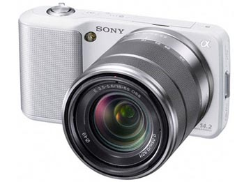
|
In 2001 Kodak and Olympus joined forces and created a standard for DSLR cameras called "Four Thirds System". It is different from Canon or Nikon DSLRs. Sensor - 4/3 " (18mm x 13.5mm). Focus distance ~40mm. Then in 2008 Olympus and Panasonic joined forces to create a standard for high quality cameras with interchangeable lenses - but WITHOUT MIRROR AND PRIZM. This is Micro Four Thirds - http://en.wikipedia.org/wiki/Micro_Four_Thirds_system . Focus ~20mm. Sensor size - 4/3 " (18.00 x 13.50 mm, 2.43 cm²).
Pixel density ~ 5 MP/cm².
| 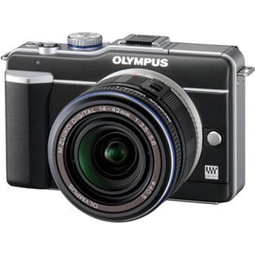 |
|
Olympus PEN E-P1 (July 2009),
Olympus PEN E-P2 (November 2009),
Olympus PEN E-PL1 (February 2010)
- Olympus PEN E-PL1. Micro Four Thirds camera. Rangefinder-style body.
12 MPixels. Pixel density 5.1MP/cm².
Includes 14-42mm Micro Four Thirds Lens (equivalent to 28-85mm in 35 mm Format). Image stabilization in the body. 115 x 72 x 42 mm - 334g (with lens) - $520
Lenses: Micro Four Thirds lenses - big choice
- Olympus M.Zuiko Digital ED 14-150mm f/4.0-5.6 Zoom Lens - equiv. to 28-300mm in 35mm format
- Olympus
M.ZUIKO Digital ED 14-42mm f3.5 - 5.6 Micro 4/3 Zoom - equiv. to 28-85mm in 35 mm format - comes with camera
- Olympus
M.Zuiko Digital ED 9-18mm f/4.0 -5.6 Lens
- Olympus
M.Zuiko Digital 17mm f2.8 Lens for Micro Four Thirds Format Cameras
- etc
|
| 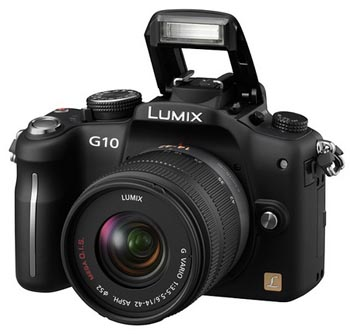 |
|
Panasonic Lumix DMC-G1 (October 2008),
Panasonic Lumix DMC-GH1 (April 2009),
Panasonic Lumix DMC-GF1 (September 2009)
Panasonic Lumix DMC-G10 (March 2010)
Panasonic Lumix DMC-G2 (March 2010)
Panasonic Lumix DMC-GH2 (Fall 2010)
Panasonic Lumix DMC-GF2 (November 2010) - improved and smaller GF1
Panasonic Lumix DMC-G10 Micro Four Thirds camera. 12 MPixels. Pixel density 5MP/cm². Image stabilization is in the lens. 124 x 90 x 74 mm, weight 388 g ((with lens)). Comes with 14-42mm lens (equiv to 28-84m) - $500.
http://www.youtube.com/watch?v=hFEfk1Mn4sg
Panasonic Lenses (note: O.I.S = Optical Image Stabilizer)
- 45-200mm f/4-5.6 G Vario MEGA O.I.S. Lens (equiv 90-400mm)
- Lumix G Vario 14 - 45mm f/3.5 - 5.6 ASPH / MEGA O.I.S. (equiv 90mm)
- Lumix 20mm f/1.7 Aspheric G- Series Lens (equiv 40mm)
- Lumix G Vario 7-14mm Lens (equiv to 14-28mm)
- Leica DG Macro-Elmarit 45mm F2.8 ASPH. MEGA O.I.S. (equiv 90mm)
- Lumix G Fisheye 8mm/F3.5 Lens (equiv 16mm)
- Lumix G Vario 14-42mm f/3.5 -5.6 Asph. / MEGA O.I.S. (equiv 28-84mm) - comes with camera
- Lumix G Vario HD 14-140mm f/4.0-5.8 ASPH./MEGA O.I.S. (equiv 28-280) ~$700
- Lumix G 14mm F2.5 ASPH wideangle
- Lumix G Vario 100-300mm F4-5.6 Mega OIS telephoto zoom
- Lumix G 12.5mm 3D
|
Compare size and weight with those 2 standard cameras:
- DSLR Canon EOS 550D - 129 x 98 x 62 mm, 530g (body only, with a lens it is more than 1000 g)
- Portable Canon S95 - 100 x 58 x 30 mm , 195g
Samsung also created mirrorless Interchangeable Lens Cameras:
| 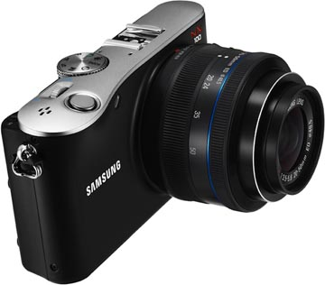 |
|
Samsung NX100 -
Rangefinder-type body
14.6 CMOS sensor
3" display, 720P HD video
ISO to 6400
iFn lenses for quick access to settings
size:120.5x71.34.5mm / 282g (body)
Optional electronic viewfinder, flash, GPS
compatible with all NX lenses, including new ones:
- 20-50mm lens (equiv. 30.8-77mm)
- 20mm f/2.8 iFn pancake lens (equiv 30.8 mm)
crop factor 1.5
sensor size: 23.4 x 15.6 mm (3.65 cm²)
Pixel Density - 4.0 MP/cm2
|
|
| Ricoh |
|
Ricoh GXR A12 (interchangeable lens) |
|
| Fujifilm |
|
Fujifilm - FinePix X100 large-sensor compact |
|
| |
|
|
|
Note - as of today (September 2010) Nikon and Canon still didn't come up with their own versions.
- Why photocameras need huge lenses when human eye uses only a tiny lens? (eye constantly moves, brain creates image from many snapshots)
- What is the focal length of the eye? (~22mm)
- What is the "aperture" of the eye? (iris openning ~1..7mm, dividing focal length 22mm by these numbers give ~3..22 in familiar aperture numbers)
- How many megapixels human eye has ? (depends on how you estimate ~300-500 MPixels total)
- What is the resolution of the human eye (In Fovea (central area) ~ 2 micrometer per cone, which translates into 25 MPixels per cm2, but on periphery it is much less)
- Eyes have huge dynamic range (many orders of magnitude better than camera, can catch smallest changes in brightness)
- What is the sensitivity of the eye in expressed in ISO? ( ~800, depends on how you estimate)
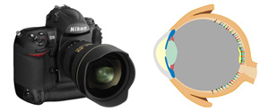
- http://www.clarkvision.com/imagedetail/eye-resolution.html - good article
- http://www.rags-int-inc.com/PhotoTechStuff/CameraEye/ - good article
- http://photography-on-the.net/forum/showthread.php?t=152515 - Human eye vs. the Camera discussion
- http://en.wikipedia.org/wiki/Eye - focal length ~22 mm, max "aperture" opening -7 mm
- http://en.wikipedia.org/wiki/Retina
- http://en.wikipedia.org/wiki/Cone_cell - 4..7 million in human eye, size 0.5..4 micrometer, mostly in the center - precise color vision
- http://en.wikipedia.org/wiki/Rod_cell - 75..150 million in human eye, smaller than cone cells, vision in the dark (1 photon response), black and white vision, movement vision, peripheral vision
- http://en.wikipedia.org/wiki/Fovea - Fovea = central portion of retina 1mm in diameter which has the smallest and highest density cones, responsible for sharp central vision, 50% of eye nerve fibers go from this area.
- http://library.thinkquest.org/28030/eyeevo.htm - evolutin of the eye
- http://www.luminous-landscape.com/columns/eye-camera.shtml
- http://www.cambridgeincolour.com/tutorials/dynamic-range.htm
- http://www.extremetech.com/article2/0,2845,13766,00.asp
- http://cameras.about.com/od/technologies/a/human_eye_camer.htm - curved image sensor
Parameters:
- Size, pixel count, pixel density (per cm2), pixel size
- Sensor type - CCD (Charge-Coupled Device), CMOS (Complementary Metal–Oxide–Semiconductor), backlit CMOS (better sensitivity at low light), hybrid CMOS/CCD, etc.
- Color-separation methods:
- mosaic filters (Bayer sensor),
- depth-stacking absorbtion/separation (Sigma's Foveon X3 sensor),
- dichroic prism - and 3 separate image sensors (3CCD))
- Dynamic range - range of luminosity that can be reproduced accurately. A ratio of the largest possible signal to the smallest (noise floor in total darkness). This is basically how the contrast is defined. It is is measured in EV differences (known as stops) between the brightest and darkest parts of the image. Humans have dynamic range of ~10,000:1, that is ~ 10 stops. If dynamic range is high - the image will contain highlights and shadows. If it is limited - then bright subjects become white, dark subjects - black. No fine details. This is called "Highlight burn-out". Also as different colors of the sensor don't saturate simultaneously, there can be strong coloring (hue) in burnt-out highlights.
Ways to increase dynamic range:
- increasing dynamic range of the image sensor (making larger pixels, decreasing level of noise, using higher-bitness Analog to Digital converter, etc.)
- Using high-resolution ADC (14 bits), reduce quantization noise.
- using RAW images - and properly process them (they retain more info than JPEG images).
- using exposure bracketing - taking 3 pictures - normal, under-, and over- exposed - and combine them into a single image with a higher dynamic range.
- using 2 arrays of photodiodes (different sizes, sensitivity, color sensitivity, etc), then use digital algorithms to combine their output.
- etc.
- Bits per pixel ( up to 16 )
- Crop factor (focal length multiplier) = Full Frame Size (36mm x 24 mm) divided by sensor size. If the sensor is smaller than full frame, crop factor is larger than 1.
- ISO sensitivity
- SNR = Signal to Noise Ratio - measured at different ISO, at different colors.
- Color Response (by channel, sensitivity vs ISO, relative sensitivities, full CS (Color Sensitivity)).
ADC - Analog to Digital Converter - usually 12 bit on an average camera. Can be 14 bit, or even 16 bit on a very expensive cameras. If we use 1 ADC to sample 10 MPixel sensor in under 1 sec - then we need sampling rate of more than 10 MHz. Today's ADCs can have 80, 100, even 160 MHz performance. And they now come x1, x2, or x4 per chip (and some cameras take advantage of several channels). Higher speed means higher cost, may be higher battery consumption. So it is a trade-off.
Bitness of the image:
- 8-bit image (x3 colors = 24 bits per pixel) - very low dynamic range
- 16-bit image (x3 colors = 48 bits per pixel) - low dynamic range
- 32-bit image (96 bits per pixel) - can support a sensor with a High Dynamic Range. Numbers are stored using floating point encoding - thus values can be unlimited.
Sensors Comparison (from DxO Labs):
| Camera |
Price
(USD) |
Date |
Rating |
Portrait
Color
depth
(bits) |
Landscape
Dynamic
Range
(Evs) |
Sports
Low-
Light
ISO |
Sensor Type |
Reso-lution |
Sensor
photo detec-tors (Mpix) |
Size (mm) |
Color filter array |
Pixel pitch (µm) |
Bits per pixel |
Crop Factor
|
Aspect Ratio |
ISO range |
Shutter type |
Shtter Speed (s) |
Frame rate (fps) |
Live view |
Stabili-zation |
| Phase One P65 Plus |
40,000 |
2008 |
89 |
26 |
13 |
1158 |
CCD |
8984 x 6732 |
60.48 |
40.4 x 53.9 |
RGB |
6 |
16 |
0.64 |
4:3 |
50 - 3200 |
E |
1/4000 - 60 |
1 or 1.4 |
no |
no |
| Nikon D3X |
9,172 |
2008 |
88 |
24.7 |
13.7 |
1992 |
CMOS |
6080 x 4044 |
24.59 |
24.0 x 35.9 |
RGB |
5.9 |
14 |
1.00 |
3:2 |
50 - 6400 |
M |
1/8000 - 30 |
5 |
yes |
no |
| Canon EOS 5D Mark II |
3,520 |
2008 |
79 |
23.7 |
11.9 |
1815 |
CMOS |
5634 x 3753 |
21.14 |
24.0 x 36.0 |
RGB |
6.39 |
14 |
1.00 |
3:2 |
50 - 25600 |
M |
1/8000 - 30 |
3.9 |
yes |
no |
| Nikon D90 |
1,235 |
2008 |
73 |
22.7 |
12.5 |
977 |
CMOS |
4310 x 2868 |
12.36 |
16.0 x 24.0 |
RGB |
5.48 |
12 |
1.50 |
3:2 |
100 - 6400 |
M |
1/4000 - 30 |
4.5 or 1-4 |
yes |
no |
| Sony NEX5 |
650 |
2010 |
69 |
22.2 |
12.2 |
796 |
CMOS |
4608 x 3072 |
14.16 |
15.6 x 23.4 |
RGB |
5.08 |
12 |
1.50 |
3:2 |
200 - 12800 |
M |
1/4000 - 30 |
7 |
yes |
yes |
| Canon EOS 7D |
1,974 |
2009 |
66 |
22 |
11.7 |
854 |
CMOS |
5360 x 3515 |
18.84 |
14.9 x 22.3 |
RGB |
4.16 |
14 |
1.60 |
3:2 |
100 - 12800 |
M |
1/8000 s - 30 |
8 |
yes |
no |
| Canon EOS Rebel T2i, EOS 550D |
900 |
2010 |
66 |
22.1 |
11.5 |
784 |
CMOS |
5344 x 3516 |
18.79 |
14.9 x 22.3 |
RGB |
4.17 |
14 |
1.60 |
3:2 |
100 - 12800 |
M |
1/4000 - 30 |
3.7 |
yes |
no |
| Olympus PEN EPL1 |
599 |
2010 |
54 |
21.5 |
10.1 |
487 |
NMOS |
4096 x 3084 |
12.63 |
13.0 x 17.3 |
n/a |
4.22 |
12 |
2.00 |
4:3 |
100 - 6400 |
E |
1/2000 - 60 |
3 |
yes |
yes |
| Canon PowerShot S95 |
380 |
2010 |
47 |
20.4 |
11.3 |
153 |
CCD |
3744 x 2784 |
10.42 |
5.7 x 7.6 |
|
2.03 |
12 |
4.50 |
4:3 |
80 - 3200 |
E |
1/1600 - 15 |
0.8 |
yes |
yes |
| Canon PowerShot S90 |
420 |
2009 |
46 |
20.2 |
11 |
185 |
CCD |
3744 x 2784 |
10.42 |
5.7 x 7.6 |
RGB |
2.03 |
12 |
4.50 |
4:3 |
80 - 3200 |
E |
1/1600 - 15 |
0.9 |
yes |
yes |
| Panasonic DMC FZ28 |
426 |
2008 |
27 |
17.9 |
10.1 |
79 |
CCD |
3668 x 2754 |
10.10 |
5.0 x 6.0 |
n/a |
1.67 |
12 |
6.00 |
4:3 |
100 - 1600 |
E |
1/2000 - 60 |
N/A |
yes |
N/A |
Some explanations for the above table:
- Crop Factor = Focal length multiplier = ratio of the size of full frame (24mm x 36 mm) to the size of the sensor. As sensor is usually less than full frame, Crop Factor is usually larger than 1.
- Shutter type: E - Electronic, M - Mechanical
- Portrait photography: Color Depth - maximum color sensitivity is achieved at bright light when you can use low ISO setting. Measured in bits. A color sensitivity of 22bits is excellent, differences below 1 bit are barely noticeable.
- Landscape photography: maximum Dynamic Range - juxtaposing bright sky with shadowy places. There is a lot of light, camera is set on a tripod to use lowest ISO settings. If dynamic range of the camera is less than that of the scene, some details in shadows will be lost or highlights will be burned. Note that dynamic range falls rapidly with higher ISO settings, because amplification increases the noise. Max. Dyn. Range is expressed in EVs (exposure values) or f-stops. Increase of 1 EV (or one stop) means doubling the amount of light. A value of 12 EV is excellent with differences below 0.5 EV usually not noticeable.
- Sports & action photography: Low-Light ISO - using small exposure time to "freeze" the motion, capture the moment. This usually requires to use high ISO settings (to compensate for short exposure time). This means - using amplification, thus increasing the noise (SNR = Signal to Noise Ratio). SNR strength is given in dB, 6 dB increase in SNR means 50% decreasing in noise for the same signal. An SNR value of 30dB reflects an excellent image quality. Low-Light ISO is then defined as the highest ISO setting for the camera such that the SNR reaches this 30dB value while keeping a good dynamic range of 9 EVs and a color depth of 18bits. Note, a difference of Low-Light ISO of 25% represents 1/3 EV and is slightly noticeable.
100+ cameras (model, sensor_ranking)
89 - Phase One P65 Plus
88 - Nikon D3X
87 - Phase One P40 Plus
82 - Nikon D3s
81 - Nikon D3
80 - Nikon D700
80 - Canon EOS 1Ds Mark III
79 - Canon EOS 5D Mark II
79 - Sony Alpha 850
79 - Sony Alpha 900
78 - Hasselblad H3DII 50
77 - Leaf Aptus75S
77 - Phase One P45 Plus
75 - Hasselblad H3DII 39
74 - Canon EOS 1Ds Mark II
74 - Canon EOS 1D Mark IV
73 - Nikon D90
72 - Nikon D5000
72 - Pentax K-x
71 - Canon EOS 1D Mark III
71 - Canon EOS 5D
70 - Nikon D300s
69 - Sony NEX5
69 - Leica M9
68 - Samsung GX 20
68 - Sony NEX-3
67 - Sony Alpha 380
67 - Nikon D300
66 - Sony Alpha 700
66 - Canon EOS 1D Mark II N
66 - Canon EOS 1D Mark II
66 - Pentax K10D
66 - Sony Alpha 550
66 - Canon EOS 7D
66 - Canon EOS 550D (Rebel T2i)
|
66 - Sony Alpha 450
65 - Pentax K20D
65 - Sony Alpha 350
65 - Fujifilm FinePix S5 Pro
65 - Nikon D60
64 - Sony Alpha 500
64 - Mamiya ZD Back
64 - Sony Alpha 330
64 - Pentax K200D
64 - Nikon D200
64 - Sony Alpha 300
64 - Panasonic Lumix DMC GH1
64 - Canon EOS 40D
64 - Pentax KM
63 - Nikon D40X
63 - Sony Alpha 230
63 - Canon EOS 50D
63 - Sony Alpha 200
63 - Canon EOS 500D (Digital Rebel T1i)
62 - Nikon D3000
62 - Canon EOS 400D (Digital Rebel Xti)
62 - Canon EOS 20D
62 - Canon EOS 1000D (Digital Rebel XS)
62 - Canon EOS 1Ds
61 - Nikon D80
61 - Pentax K7
61 - Sony Alpha 100
61 - Canon EOS 450D (Digital Rebel Xsi)
60 - Fujifilm FinePix S3 Pro
60 - Canon EOS 350D, Digital Rebel XT
59 - Canon EOS 30D
59 - Leica M8
59 - Nikon D2Xs
59 - Nikon D2X
58 - Konica Minolta DYNAX 5D
|
58 - Konica Minolta DYNAX 7D
57 - Canon EOS 10D
56 - Olympus E3
56 - Nikon D40
56 - Olympus E420
56 - Olympus E450
56 - Olympus PEN EP2
55 - Canon EOS 300D (Digital Rebel)
55 - Olympus E520
55 - Panasonic Lumix DMC L10
55 - Olympus E600
55 - Nikon D50
55 - Olympus E30
55 - Olympus PEN EP1
55 - Olympus E620
54 - Olympus PEN EPL1
53 - Panasonic Lumix DMC GF1
53 - Panasonic Lumix DMC G1
52 - Olympus E510
51 - Olympus E410
50 - Nikon D70s
50 - Nikon D70
47 - Canon Powershot G11
46 - Canon PowerShot S90
43 - Fujifilm FinePix S100fs
40 - Nikon D2H
39 - Panasonic Lumix DMC LX3
37 - Canon Powershot G10
35 - Nikon Coolpix P6000
35 - Canon Powershot G9
30 - Olympus SP 565 UZ
28 - Panasonic Lumix DMC FX150
28 - Olympus SP 570 UZ
27 - Panasonic DMC FZ28
|
These are 2 old cameras I have - both are small and use SD cards:
- Panasonic SDR-S150 - old, but I love it. Small, convenient, starts fast, creates mpeg2 files on SD card. But still images suck, because the sensor is very small (only 1/6", 0.8 MPixel per sensor)
- Canon FS-100 Flash Memory Camcorder (Silver) Price - $285 (in 2008). Has input for external microphone, records on SD - mpeg2. Also very small sensor (1/6", 0.8 MPixel).
Old cameras supported standard video up to 720x480 pixels. All new cameras also support HD video:
- 1,920×1,080 pixels (1080p or 1080i, where p = progressive, i - interlaced)
- 1,280×720 (720p)
Here are some websites to help you choose the camera for you:
Here is a short list of camcorders to notice:
- Canon HF S21 (1 optical CMOS 8.59 megapixels, Optical Sensor Size 1/2.6", 0.3 lux, optical stabilization, 1080p)
- Panasonic HDC-TM700 (3 optical sensors - 3MOS, 1/4.1 ", 3 MPixels each, 9 MPixel total, 1 lux, 1080p)
- JVC GZ-HM1 (1 optical back-illuminated CMOS sensor 1/2.3" 10.62 MPixels, optical stabilization, 1080i, reasonable still protos)
- Sony HDR-CX550V (1 optical Exmor R CMOS sensor 1/2.88" 6.631 MPixels, optical stabilization, 1080i & p)
- NEX-VG10E - http://www.dpreview.com/news/1007/10071401sonynexvg10e.asp - similar to NEX5 photocamera - same large 14.2 Megapixel sensor (which is ~ 20 tmes larger than those used on conventional camcorder), similar controls. Can do very good still photos (although can't do RAW format).
Typical video camera today can also shoot HD video.
Although usually not as good as a real video camera - no good microphone, no focusing during shooting, etc.
Video cameras used to have very small sensors (1/6" .. 1/4").
Thus their still photos were very bad.
But this started to change recently .
Now you can see 1/2.3" in consumer camcorders, 1" in professional cameras.
Sony Nex-VG10E is ~2" (23.6 x 15.7 mm). This is a great video camera and photo camera in one body.
But there are still many engineering problems to solve. For example, energy consumption which comes with big sensor (overheating, battery life). Just 20 min shooting Live View with VR (Vibration Reduction) on Nikon 90 is enough to almost completely discharge the battery.